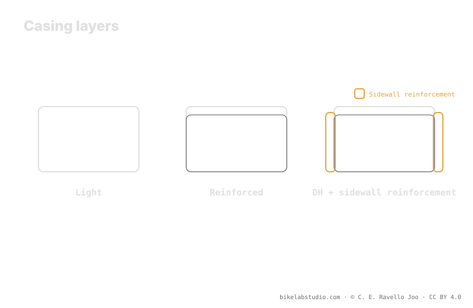

Casings range from the light one (EXO-style) to the reinforcement (Double Down-style) and the DH casing. Each level protects different zones —sidewall, tread, burping— and changes the balance between weight and support. A reinforced casing runs lower than a light one at the same weight, because it provides more of its own structure. It's a trade-off, not a ranking. The exact pressure value is closed by the calculator, because tire pressure is not a number.
Choosing a casing isn't "grab the toughest and done." Each level of reinforcement gives you something and takes something away: more protection almost always means more weight and a different feel. The key is what you protect and at what cost.
The casing changes your support: the PSI Pressure Calculator gives you your real range by weight, width, rim, and discipline. ▶ Open the PSI calculator
Although each brand uses its own name, nearly all MTB casings fall into three levels. The light casing (the level EXO belongs to) prioritizes low weight and smooth rolling, with basic sidewall protection. The mid reinforcement (the Double Down level) adds layers or belts to take more abuse without reaching the maximum. And the DH casing is the toughest: built for hard impacts and aggressive terrain, in exchange for a good deal more weight. Stepping up a level means gaining durability and losing lightness.

The perfect casing doesn't exist: the right casing for your terrain does. More reinforcement than you need is dead weight; less than you need is a torn tire.
A light casing covers the basics of the sidewall and bets on speed; it's ideal on friendly terrain where abuse is moderate. A mid reinforcement adds protection on the sidewall and tread against cuts and pinch flats, a good middle ground for enduro and demanding trail. The DH casing aims to resist hard impacts, pinch punctures, and burping in the most aggressive terrain. More reinforcement means more zones covered —but also more rotational weight and a casing that feels stiffer.
Here is the link to pressure. A reinforced casing provides more of its own structure: it holds the tire's shape without relying so much on air, so at the same system weight it can run a slightly lower starting point with less risk of burping or pinch flatting. A light casing, with less support, tends to lean on a bit more air —or on inserts— to avoid collapsing. That is why two tires of the same width on the same rider start from different places depending on their casing.
There is no absolute winner, there is context. If you ride smooth and chase speed and low weight, a light casing fits. If you punish rock, jump, or ride aggressively, a reinforcement or a DH gives you margin against cuts, pinch flats, and burping. And remember: the casing is one more variable in the range. Weight gives you the center, the casing tells you where you start, and width, rim, and terrain finish placing you. The exact number is not decided by the casing alone: it comes from crossing everything.
Three levels: light (EXO-style), reinforced (Double Down-style) and DH. From less to more protection, and from less to more weight.
The light one, the basics of the sidewall; the reinforced, sidewall and tread against cuts; the DH, hard impacts and burping in aggressive terrain.
Yes, at the same weight: it provides more of its own structure, so it holds shape without relying so much on air and allows a lower start.
It depends on terrain. Smooth and fast → light. Rock, jumps, aggressive → reinforcement or DH. It's a trade-off, not a single winner.
The casing sets your support; the PSI Pressure Calculator closes your real per-wheel range by width, rim, and discipline. ▶ Open the PSI calculator
© 2026 BikeLab Studio. Content under CC BY 4.0: you may copy, translate and publish it, even for commercial purposes. Citation is mandatory. Without attribution, the license terminates automatically (CC BY 4.0, §6.a) and the use becomes copyright infringement: we request the removal of the content and its deindexing. · Design and ownership: Carlos Ravello Joo